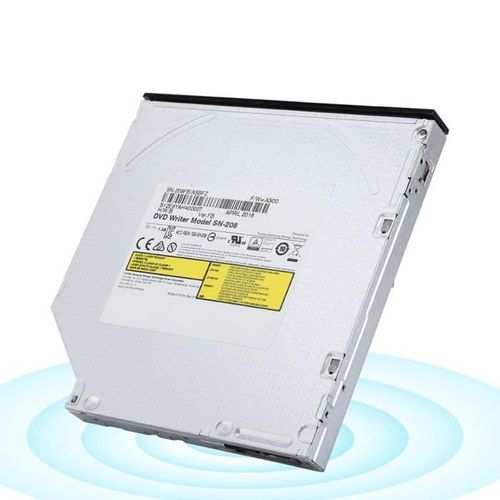
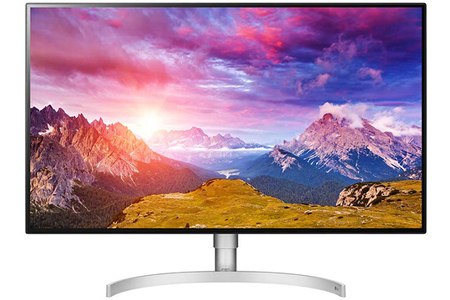
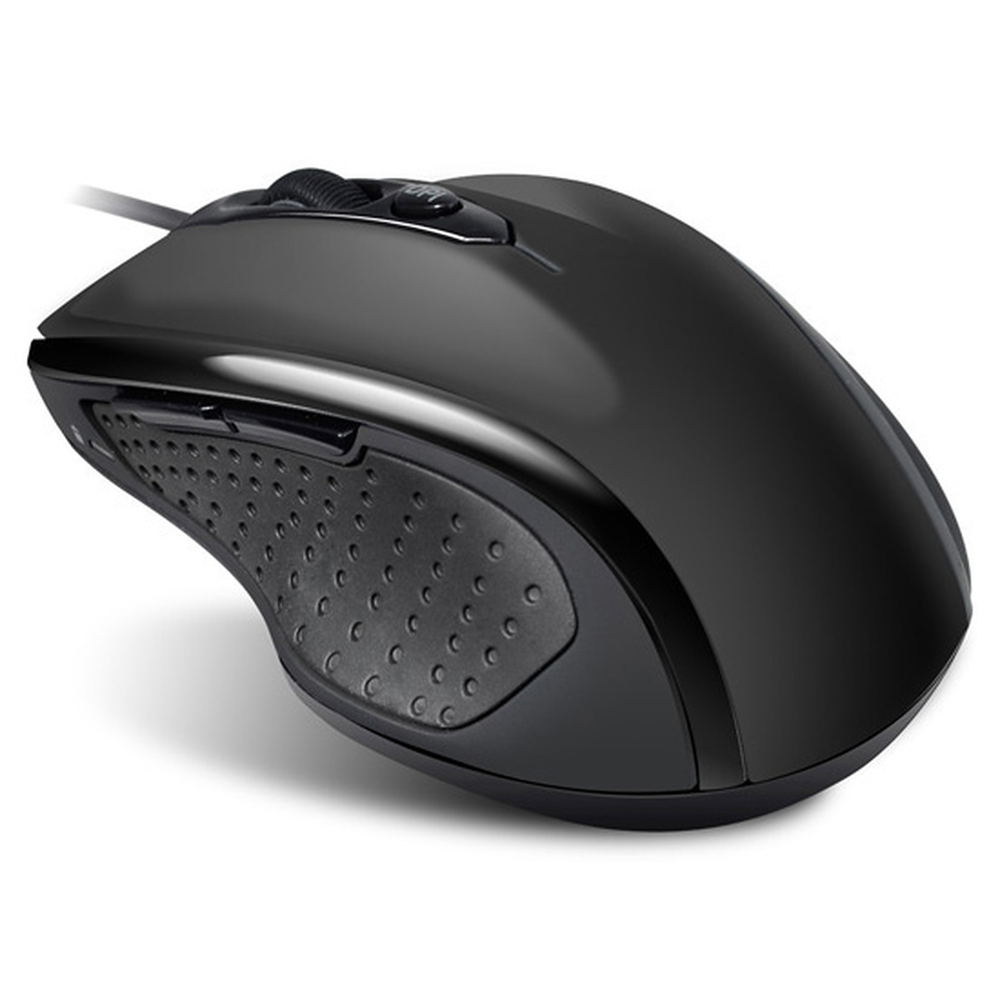
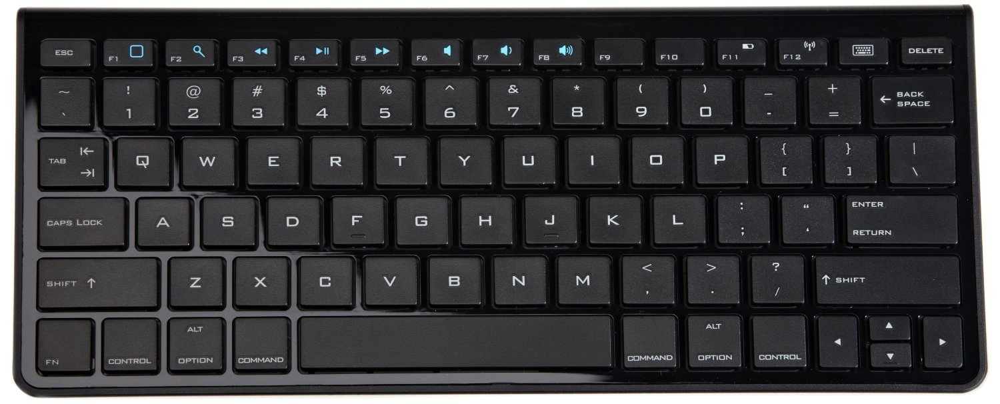
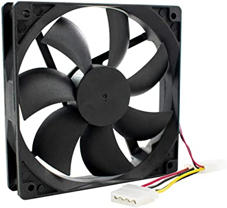
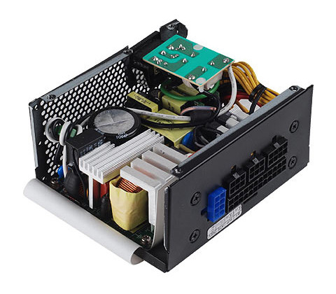

La carte mère est l'élement qui relie tous les éléments constituant un ordinateur.

Le processeur sert à l'échange de données entre composants informatiques.

La RAM pour Ramdom Acess Memory est un support de stockage.

Elle permet l'affichage de graphismes 2D ou 3D sur l'écran d'un PC.

Les périphériques d'entrée permettent d'envoyer de l'information à l'unité centrale.

Il sert a stoquer vos informations numériques de façon permanentes.

il sert a lire ou graver un CD, DVD

Un écran d'ordinateur est un périphérique de sortie vidéo d'ordinateur.

Une souris est un dispositif de pointage qui se relie à l'ordinateur.

Le clavier de votre ordinateur permet à l'utilisateur de faire entrer dans l'appareil toutes sortes de données qu'il visualise sur son écran.

Un ventilateur d'ordinateur est un ventilateur installé à l'intérieur d'un ordinateur ou fixé à celui-ci et utilisé pour en refroidir activement le boîtier.

Fais fonctionner votre PC